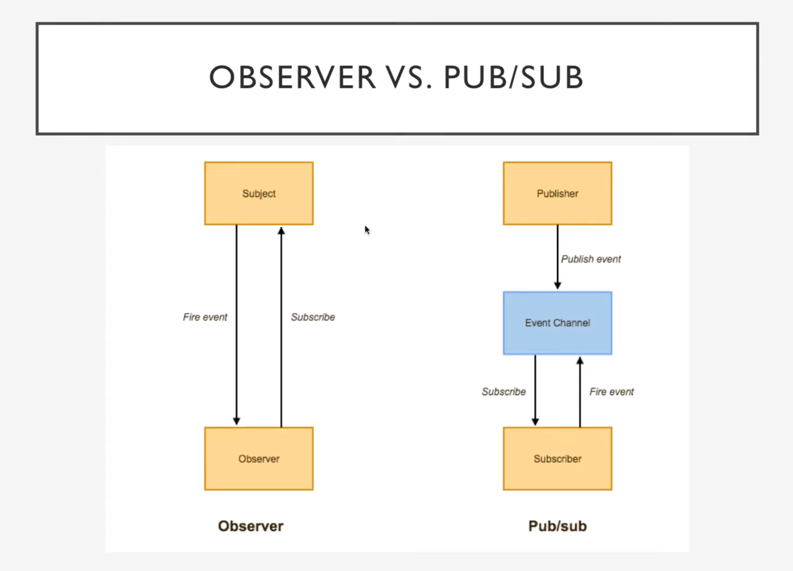

Observer & PubSub Pattern
Synonyms: Event-Subscriber, Listener
Observer is a behavorial design pattern that lets us define a subscription mechanism to notify multiple objects about any event that happen to the object they are observing.
- The observer pattern involves an observable object and multiple observers that are notified when the observable changes state
- In Node.js it can be implemented using the EventEmitter interface
- We use an emitter to emit events, which can be intercepted using listeners
- Multiple event listeners are executed in the order they were registered
Problem
let's say I am very interested in a particular youtube channel and I would like to watch their next video. One approach could be I checking the channel every hour to check a new video's release. But you see the probem in this approach. Most of my checks are going to be pointless & a waste of time.
Another option could be that youtube could send tons of emails to all the customers each time a new video becomes available. it will upset cusomers who are not interested in new videos, right!!.
Solution
The current youtube channel subscription system is a reasonalble solution where any number of customers can subscribe to a channel and only the customer who have subscribed and opted in for notification shall be notified on new video release.
Implementation logic
subject/publisher : The object that has some interesting state and is also going to notify other objects about the changes to its state. This mechanism consists of an array field for storing a list of references to subscriber objects and several public methods which allow adding/removing subscribers.
subscribers : Other objects that wnat to track the changes to the publisher.
Whenever the event happens to the publisher, it invokes a specific notification method in the subsciber object.
That's why:
- All subscribers implement the same interface
- The publisher communicated with them only via that interface. This interface should declare the notification method along with a set of parameters that publisher can use to pass some contextual data along with notification.
Step by step implementation in a Classical way
Create a Publisher class that issues events. the Publisher may contain
- a
mainStatethat changes - an array field
subscribers: Subscriber[] - a method to
subscribe(s: Subscriber) - a method to
unsubscribe(s: Subscriber) - a method to
notifySubscribers()
- a
The Subscriber interface declares the notificaiton interface called
update(). The method may have several parameters that let the publisher pass some event detail along with theupdate().When a new event happens, the publisher goes over the subscibers list and calles the notification method
update()declared in the subscriber interface of each subscriber object.Concrete Subscribers perform some actions in response to notifications issued by the publisher. All of these classes must implement the same interface so the publisher isn't coupled to concreate classes.
Subscribers may need some contextual information to handle the update correctly. For this reason, publishers often pass some context data as arguments of the notification method. The publisher can pass itself as an argument. letting subscriber fetch any required data directly.
The Client creates publisher and subscriber objects separately and then registers subscribers for publisher updates.
Classical Pseudocode
Publisher base class:
class EventManager
private field listerens: hash map of event types and listeners
method subscribe(eventType, listener) {
listeners.add(eventType, listener)
}
method unsubscribe(eventType, listener) {
listeners.add(eventType, listener)
}
method notify(eventType, data) {
foreach listener in listerns of eventtype {
listener.update(data)
}
}
Concrete Publisher:
class YoutubeChannel
public field events: EventManager
constructror()
this.events = new EventManager()
method publishNewVideo()
events.notify("new_video", video_name)
Subscriber Interface:
Interface EventListener
method update(message)
Concrete Subscriber class:
class YoutubeAccount implements EventListener
method update(message)
alert(message)
Usage:
class App
ytc_1 = new YoutubeChannel()
ytc_2 = new YoutubeChannel()
yta_1 = new YouttubeAccount()
yta_2 = new YouttubeAccount()
yta_3 = new YouttubeAccount()
ytc_1.events.subscribe("new_video", yta_1)
ytc_1.events.subscribe("new_video", yta_2)
ytc_2.events.subscribe("new_video", yta_3)
Pros
- Open/Closed Principle: We can introduce new subscriber classes without having to change the publishers code.
- We can establish relations between objects at runtime
Cons
- Subscribers are notifies in random order
Example 1. Using ES6 Class
// subscriber
class User {
constructor(name) {
this.name = name;
}
update(msg) {
console.log(`NOTIFICATION ::: ${this.name}, ${msg}.`);
}
}
// subject/publisher
class YoutubeChannel {
constructor(channelName) {
this.channelName = channelName;
this.subscribers = [];
this.videos = [];
}
subscribe(user) {
this.subscribers.push(user);
user.update(`You are successfully subscribed to ${this.channelName}`)
}
unsubscribe(user) {
let userIndex = this.subscribers.indexOf(user, 0);
this.subscribers.splice(userIndex, 1);
}
postVideo(videoTitle) {
this.videos.push(videoTitle);
this.notify(`New Video - ${videoTitle} - posted on ${this.channelName}`);
}
notify(msg) {
this.subscribers.forEach((subscriber) => {
subscriber.update(msg);
})
}
}
// usage: client or main app
let u1 = new User("John");
let u2 = new User("Mike");
let channel1 = new YoutubeChannel("Youtube channel 1");
let channel2 = new YoutubeChannel("Youtube channel 2");
channel1.subscribe(u1);
channel1.subscribe(u2);
channel2.subscribe(u2);
console.log('---------------------------------------');
channel1.postVideo("C1 Video-1");
console.log('---------------------------------------');
channel2.postVideo("C2 Video-1");
channel1.unsubscribe(u2);
console.log('---------------------------------------');
channel1.postVideo("C1 Video-2");
console.log('---------------------------------------');
Result:
NOTIFICATION ::: John, You are successfully subscribed to Youtube channel 1.
NOTIFICATION ::: Mike, You are successfully subscribed to Youtube channel 1.
NOTIFICATION ::: Mike, You are successfully subscribed to Youtube channel 2.
---------------------------------------
NOTIFICATION ::: John, New Video - C1 Video-1 - posted on Youtube channel 1.
NOTIFICATION ::: Mike, New Video - C1 Video-1 - posted on Youtube channel 1.
---------------------------------------
NOTIFICATION ::: Mike, New Video - C2 Video-1 - posted on Youtube channel 2.
---------------------------------------
NOTIFICATION ::: John, New Video - C1 Video-2 - posted on Youtube channel 1.
Example 2 : Same example using prototypal inheritance :)
// subject / publisher
function YoutubeChannel(channelName) {
this.channelName = channelName;
this.subscribers = [];
this.videos = [];
}
YoutubeChannel.prototype.subscribe = function (user) {
this.subscribers.push(user);
user.update(`You are successfully subscribed to ${this.channelName}`)
};
YoutubeChannel.prototype.unsubscribe = function (user) {
let userIndex = this.subscribers.indexOf(user, 0);
this.subscribers.splice(userIndex, 1);
};
YoutubeChannel.prototype.postVideo = function (videoTitle) {
this.videos.push(videoTitle);
this.notify(`New Video - ${videoTitle} - posted on ${this.channelName}`);
}
YoutubeChannel.prototype.notify = function (msg) {
this.subscribers.forEach((subscriber) => {
subscriber.update(msg);
})
}
// subscriber
function User(name) {
this.name = name;
};
User.prototype.update = function (msg) {
console.log(`NOTIFICATION ::: ${this.name}, ${msg}.`);
};
// usage: client or main app
let u1 = new User("John");
let u2 = new User("Mike");
let channel1 = new YoutubeChannel("Youtube channel 1");
let channel2 = new YoutubeChannel("Youtube channel 2");
channel1.subscribe(u1);
channel1.subscribe(u2);
channel2.subscribe(u2);
console.log('---------------------------------------');
channel1.postVideo("C1 Video-1");
console.log('---------------------------------------');
channel2.postVideo("C2 Video-1");
channel1.unsubscribe(u2);
console.log('---------------------------------------');
channel1.postVideo("C1 Video-2");
console.log('---------------------------------------');
Results are same as of example 1. I like this approach because it is a bit closer to how JS actually works under the hood.
Example 3: Using Node's EventEmitter
import { EventEmitter } from "events"
let eventEmitter = new EventEmitter();
// subscriber
class User {
constructor(name) {
this.name = name;
eventEmitter.on("new-video", ({ message, subscribers }) => {
if (subscribers.includes(this)) {
this.update(message);
}
})
}
update(msg) {
console.log(`NOTIFICATION ::: ${this.name}, ${msg}.`);
}
}
// subject/publisher
class YoutubeChannel {
constructor(channelName) {
this.channelName = channelName;
this.subscribers = [];
this.videos = [];
}
subscribe(user) {
this.subscribers.push(user);
user.update(`You are successfully subscribed to ${this.channelName}`)
}
unsubscribe(user) {
let userIndex = this.subscribers.indexOf(user, 0);
this.subscribers.splice(userIndex, 1);
}
postVideo(videoTitle) {
this.videos.push(videoTitle);
this.notify(`New Video - ${videoTitle} - posted on ${this.channelName}`);
}
notify(msg) {
eventEmitter.emit("new-video", {
message: msg,
subscribers: this.subscribers
})
}
}
// usage: client or main app
let u1 = new User("John");
let u2 = new User("Mike");
let channel1 = new YoutubeChannel("Youtube channel 1");
let channel2 = new YoutubeChannel("Youtube channel 2");
channel1.subscribe(u1);
channel1.subscribe(u2);
channel2.subscribe(u2);
console.log('---------------------------------------');
channel1.postVideo("C1 Video-1");
console.log('---------------------------------------');
channel2.postVideo("C2 Video-1");
channel1.unsubscribe(u2);
console.log('---------------------------------------');
channel1.postVideo("C1 Video-2");
So, the changes are:
- in the
notifymethod of the publisher we are emiting an event with some payload - in the
constructorof the subscriber we listen to the event and invoke theupdatemethod. Awesome!!
Publish/Subscribe Pattern
- Similar in conept to the observer pattern
- Messages are generated by a publisher an can be categorized by topic
- Subscribers can receive messages as per topic discussion
- A message-broker (topic/event channel) facilitates transport of messages between the publisher and the subscribers. Publisher sends message to a message-broker and the message-broker distributes it to the subscribers
- Brokers such as Rabbit MQ and ActiveMQ Apollo are popular in the enterprise world
- Useful when working with Microservices and Serverless architectures
- Message deliverability may suffer if the broker goes down, is misconfigured or crashes
- This differs from the Observer pattern as it allows any subscriber implementing an appropriate event handler to register for and receive topic notifications broadcasted by the publisher
- The general idea here is the promotion of loose coupling. Rather than single objects calling on the methods of other objets directly, they instead subscribe to a specific activity of anohter object and are notified when it occurs

| Observer Pattern | Pub/Sub Pattern |
|---|---|
| The recipient knows the sender and vice-versa | The sender and the recipient are unknown to each other |
| Direct communication | An Intermediary handles the communication |
Publisher/Subscriber (PubSub) is a messaging pattern where senders of messages, called publishers, do not program the message to be sent directly to specific receivers, called subscribers, but instead, characterize message into classes (topics), without knowledge of which subscribers, if any, there may be.
Similarly, subscribers, express interest in one or more classes(topics), and only receive messages that are of interest, without knowlege of the publisher.
A simple yet very good example for us could be, the same YoutubeChannel / User case but, Users subscribe to a topic and not a channel. This sounds like a very good candidate for PubSub pattern.
PubSub Example:
Very Simple PubSub broker object implementation. In this implementation the events object basically contains all events mapped to an array of all the callback functions associated with that event. In real life we would be most probably using one of the time tested pubSub libraries for example : https://github.com/mroderick/PubSubJS
var pubsub = {
events: {},
subscribe: function (eventName, fn) {
this.events[eventName] = this.events[eventName] || [];
this.events[eventName].push(fn);
},
unsubscribe: function (eventName, fn) {
if (this.events[eventName]) {
for (var i = 0; i < this.events[eventName].length; i++) {
if (this.events[eventName][i] === fn) {
this.events[eventName].splice(i, 1);
break;
}
};
}
},
publish: function (eventName, data) {
if (this.events[eventName]) {
this.events[eventName].forEach(function(fn) {
fn(data);
});
}
}
};
// subscriber - completely decoupled with publishers
// subscribers just needs to subscribe (on) to a topic.
class User {
constructor(name) {
this.name = name;
}
subscribeToTopic(topicName) {
pubsub.subscribe(`new_video__${topicName}`, ({ message }) => {
console.log(`Notification to ${this.name} :::`, message);
});
}
}
// publisher - completely decoupled with subscribers
// publisher's responsibility is just to publish (emit).
class YoutubeChannel {
constructor(channelName) {
this.channelName = channelName;
}
postVideo(videoTitle, topic) {
let msg = `New ${videoTitle} of topic ${topic} published on ${this.channelName}`;
pubsub.publish(`new_video__${topic}`, { message:msg});
}
}
// Main app - Usage:
let u1 = new User("John");
let u2 = new User("Mike");
let u3 = new User("Nita");
let channel1 = new YoutubeChannel("Youtube channel 1");
let channel2 = new YoutubeChannel("Youtube channel 2");
u1.subscribeToTopic('topic_one');
u3.subscribeToTopic('topic_one');
u1.subscribeToTopic('topic_two');
u2.subscribeToTopic('topic_two');
u3.subscribeToTopic('topic_two');
u3.subscribeToTopic('topic_three');
channel2.postVideo('video title one', 'topic_three');
channel2.postVideo('video title two', 'topic_two');
Result:
Notification to Nita ::: New video title one of topic topic_three published on Youtube channel 2
Notification to John ::: New video title two of topic topic_two published on Youtube channel 2
Notification to Mike ::: New video title two of topic topic_two published on Youtube channel 2
Notification to Nita ::: New video title two of topic topic_two published on Youtube channel 2
PubSub pattern is very useful in decoupling a user interface. For example, submission of a simple survey form which takes in your name, age & rating, may publish (or emit or trigger) different events with data for example
- new_user event with user details
- rating event with data
It's upto the subscriber(s) of those topis (or events) to handle them in whatever way they want. The subscriber can either append it to a list, or fetch some new data and publish an another event with data. Again it's upto the subscriber's of that event to handle it their way. It's not uncommon to see that a subscriber publishes an another event in the callback.
PubSub results in a very loosely coupled applicaiton. It's left upto subscribers to decide now to use the knowledge of these events or the data returned. The benifit of this is that, if we wanted, we could have 10 different subscribers, utilizing the data retured, in different ways, but as fas as the publisher is concerned, it doesn't care. It's sole duty is to trigger an event and pass data on to whoever wants to use it. This separation of concerns can make the overall design of our code a little cleaner.
The Observer and the Publisher/Subscriber patterns are easier at the same time very powerful and useful pattern.